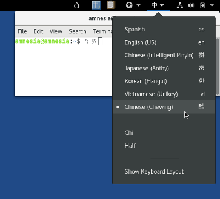

This release fixes many security vulnerabilities. You should upgrade as soon as possible.
Mudanças
Atualizações e mudanças
Add support for the Bopomofo input method for Chinese using the Chewing library and improve support for the Pinyin input method. (#11292)

If you still have problems typing in Bopomofo or Pinyin, please let us know on tails-testers@boum.org (public mailing list) or tails-bugs@boum.org (private email).
Save a backup of the configuration of the persistent storage every time it is modified. (#16461)
This will help us understand and solve why sometimes all the settings of the persistent storage disappear. (#10976)
Update Tor Browser to 8.0.7.
Update Tor to 0.3.5.8.
Update Thunderbird to 65.1.0.
Update Linux to 4.19.28.
Update the Intel microcode to 3.20180807a.2, which fixes more variants of the Spectre, Meltdown, and Level 1 Terminal Fault (L1TF) vulnerabilities.
Problemas resolvidos
Prevent Additional Software from downloading packages that are already saved in the persistent storage. (#15957)
Fix the localization of Tor Launcher, the application to configure a Tor bridge or a local proxy. (#16338)
Fix accessibility when opening Tor Browser from a desktop notification. (#16475)
Fix WhisperBack crashing when additional APT repositories is configured. (#16563)
Para mais detalhes, leia nosso changelog.
Problemas conhecidos
Electrum is outdated and cannot connect to servers
Electrum in Tails cannot connect anymore to Electrum servers.
The version of Electrum in Tails is vulnerable to a phishing attack that tricks people in updating to a malicious version of Electrum which is not distributed from the official Electrum website.
You are safe unless you try to do the malicious update manually.
To prevent this phishing attack, all trustworthy Electrum servers now prevent older versions from connecting to them.
Unfortunately, newer versions of Electrum are not available in Debian and cannot be integrated easily in Tails. Given the lack of maintenance of Electrum in Debian, we are still assessing what is best to do in Tails.
Until then, your wallet is not lost and you can restore it from its seed using an up-to-date version of Electrum outside of Tails.
Tails fails to start a second time on some computers (#16389)
On some computers, after installing Tails to a USB stick, Tails starts a first time but fails to start a second time. In some cases, only BIOS (Legacy) was affected and the USB stick was not listed in the Boot Menu.
We are still investigating the issue, so if it happens to you, please report your findings by email to tails-testers@boum.org. Mention the model of the computer and the USB stick. This mailing list is archived publicly.
To fix this issue:
Reinstall your USB stick using the same installation method.
Start Tails for the first time and set up an administration password.
Choose to open a Root Terminal.
Execute o seguinte comando:
sgdisk --recompute-chs /dev/bilibop
You can also test an experimental image:
Install it using the same installation methods.
We don't provide any OpenPGP signature or other verification technique for this test image. Please only use it for testing.
Veja a lista de problemas de longa data.
Get Tails 3.13
To upgrade your Tails USB stick and keep your persistent storage
Automatic upgrades are available from 3.11, 3.12~rc1, 3.12, and 3.12.1 to 3.13.
If you cannot do an automatic upgrade or if Tails fails to start after an automatic upgrade, please try to do a manual upgrade.
To install Tails on a new USB stick
Follow our installation instructions:
All the data on this USB stick will be lost.
To download only
If you don't need installation or upgrade instructions, you can directly download Tails 3.13:
O que vem por aí?
Tails 3.14 is scheduled for May 14.
Confira o nosso roadmap e veja nossos objetivos futuros.
We need your help and there are many ways to contribute to Tails (donating is only one of them). Come talk to us!